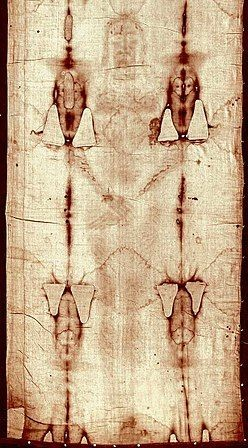
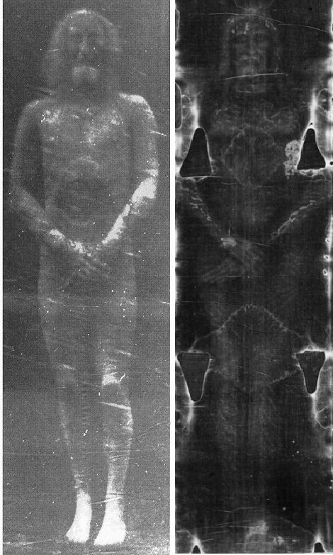
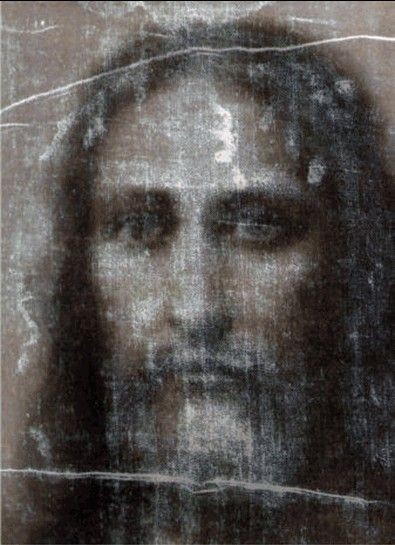
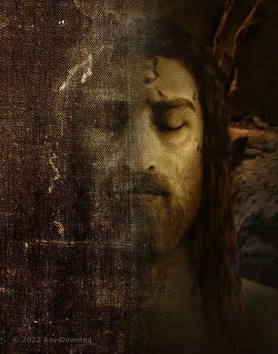
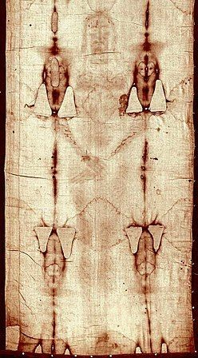
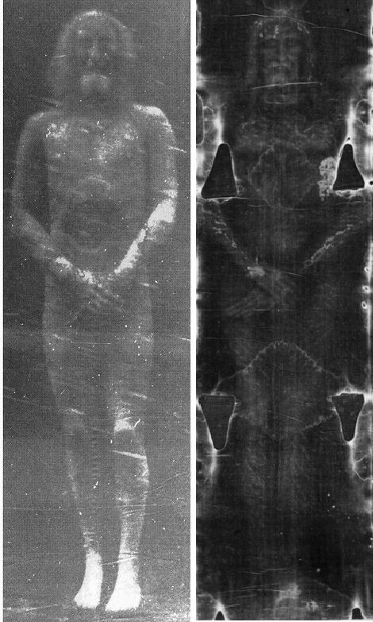
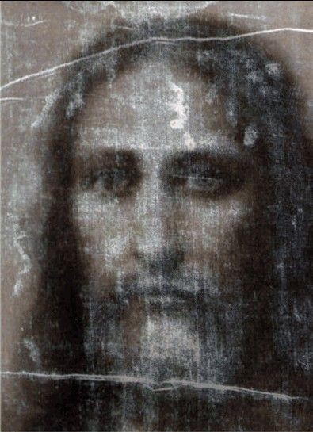
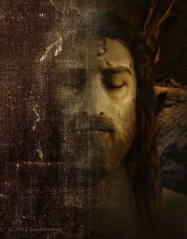

The Shroud of Turin
 







The Shroud of Turin is a centuries-old linen cloth that has captivated the world with its mysterious and controversial history. Believed by some to be the burial shroud of Jesus Christ, the cloth bears an imprinted image of a man, which has led to intense debates among scientists, historians, and theologians. Despite numerous studies, the origins and authenticity of the Shroud of Turin remain an enduring enigma.
The Cloth and Its Image
The Shroud of Turin is a rectangular piece of linen measuring about 14 feet long and 3.5 feet wide. It contains the faint, sepia-toned image of a man with apparent wounds consistent with crucifixion.
History and Provenance
The earliest historical record of the Shroud dates back to the 14th century, when it appeared in the city of Lirey, France. It later made its way to Turin, Italy, where it has been housed since the 16th century. However, the cloth's origins and the details of its early history remain a subject of debate.
The Image of the Man
The image imprinted on the Shroud is unique in its negative form, meaning that the dark areas correspond to areas of lighter skin tone. The image seems to depict a man with long hair and a beard, with wounds on his hands, feet, and side, consistent with the biblical account of Jesus Christ's crucifixion.
Carbon Dating Controversy
In 1988, the Shroud underwent radiocarbon dating tests, which suggested that the cloth originated from the Middle Ages, specifically between 1260 and 1390 AD. However, these results have been met with skepticism due to concerns about the accuracy of the samples taken and the possibility of contamination.
Scientific Investigations
The Shroud of Turin has been the subject of extensive scientific study, including analyses of the cloth's material, pollen samples, and chemical composition. Researchers have also explored various image formation theories, such as a scorch, painting, or a natural chemical process called "Maillard reaction."
Religious Significance
For many believers, the Shroud holds deep religious significance as a potential relic associated with the crucifixion and resurrection of Jesus Christ. However, the Catholic Church has not officially declared the Shroud as an authentic relic, leaving room for individual interpretation and devotion.
Skeptical Perspectives
Skeptics and critics argue that the Shroud is a medieval forgery or an elaborate artistic creation designed to deceive or inspire religious devotion. They point to the lack of historical records before the 14th century and the inconclusive scientific evidence.
Continuing Mystery
Despite numerous investigations, the true origins and nature of the Shroud of Turin remain uncertain. Its enigmatic image continues to fascinate and inspire both believers and skeptics alike, igniting curiosity about the intersection of faith, history, and science.
Conclusion
The Shroud of Turin continues to be a symbol of mystery and intrigue, captivating the world with its imprinted image and disputed origins. As scientific techniques advance and new studies emerge, the quest to unravel the secrets of the Shroud will undoubtedly persist, offering a timeless and thought-provoking puzzle for generations to come. Whether regarded as an authentic relic or an elaborate historical enigma, the Shroud of Turin stands as a testament to the enduring power of faith, curiosity, and the search for truth in the realm of human history and belief.